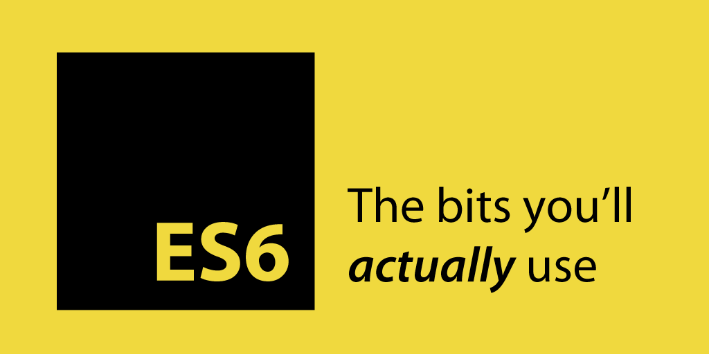
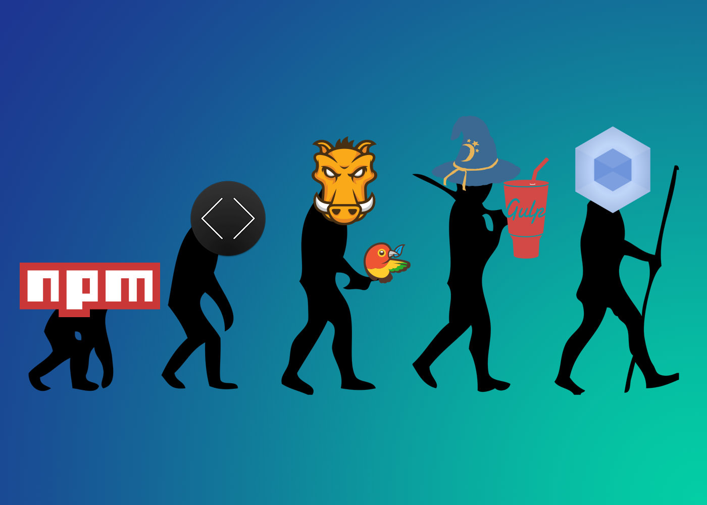

2017. 0. 00.
IT 개발2팀 UI파트 - 김재호
The Agenda
- Javascript 모듈의 필요성
- Webpack 소개
Javascript 모듈의 필요성
자바스크립트의 문제점
index.html
<script src="../js/lib/jquery.min.js"></script>
<script src="../js/lib/bootstrap.min.js"></script>
<script src="../js/app.js"></script>
<script>
$(function() {
//암묵적 전역
//var 키워드 생략 시 전역변수로 인식
foo = '';
});
</script>
- 글로벌(전역) 스코프가 쉽게 오염
- 올바른 의존성 순서
- 동일한 이름을 가진 변수 사용 (중첩 문제)
- 웹페이지가 커질수록 script 태그 수 의 증가
이런 문제점들을 해결하기 위한 방법
//IIFE (Immediately Invoked Founction Expression)
(function() {
/* code here */
})();
//'App' 같은 하나의 전역객체 밑에 네임스페이스를 갖습니다.
var App = App || {};
App.Models = {};
App.Models.Note = function() {};
모듈 시스템의 도입
- CommonJS
- AMD (Asynchronous Module Definition)
- UMD (Universal Module Definition)
ES6 Modules
App.js
//export 키워드에 의해 모듈을 정의
import React from 'react';
export const App = () => {
return(
<div>
<h1> className="title">Hello, world!!!!!!</h1>
<p>Testing rendering with JSX.</p>
</div>
)
}
index.js
//import 키워드에 의해 모듈을 사용
import { App } from './App';
- 더 이상 global이 필요하지 않습니다.
- source 순서에 독립적 입니다.
- 코드상의 namespace가 필요없습니다.
- 필요할 때 모듈을 로드 할 수 있습니다.
IFFE, AMD, CommonJS 스타일의 자바스크립트 모듈 시스템을 사용하여 파일을 분할하고,
HTTP 요청을 줄여 네트웍 성능 개선을 위해 자바스크립트 파일을 하나로 합치기도 합니다.
웹팩은 이러한 작업을 하는데 적합한 도구 입니다.
Webpack 소개
번들러 끝판왕 Webpack!!


번들러 끝판왕 웹팩 그림처럼 여러 파일들을 하나로 합쳐줍니다. JS가 점점 중요해지면서 JS 자체만으로도 엄청난 의존 관계가 생겼습니다.
ES6 모듈, RequireJS, CommonJS같은 JS 모듈 시스템들이 나오면서 JS 파일도 다른 프로그래밍 언어처럼 모듈 개념이 생겼습니다. import나 require로 js끼리 서로 의존합니다. 특히 노드로 만들다 보면 모듈이 기본 수 백개에서 많게는 수 만개까지 갑니다. 이런 것을 하나의 JS로 합쳐주는 거죠.
뭘 하고 싶니?
webpack을 통해 무엇을 자동으로 하고 싶은지 적어봅시다.
- 클라이언트 사이드에서 ES6 사용하기
- 클라이언트 사이드 코드 변경 시 브라우저 자동으로 새로고침하기
이에 필요한 플러그인들은?
- babel-loader (webpack 에서 babel 을 사용하기 위한 플러그인)
- gulp-webpack
- browser-sync
자 이제 설치 해 볼까요?
Project Start
설치
npm init
npm install webpack -g
or
npm install webpack --save-dev
디렉터리 구조
├── dist 패키지 출력 디렉토리, 프로덕션 환경 배포 파일
├── node_modules npm plugin 파일
├── src
│ ├── app.js
│ └── app.css
├── index.html
├── package.json 프로젝트 구성 정보
└── webpack.config.js 웹팩 설정파일
빌드된 코드를 로드할 html 코드를 작성
index.html
<html>
<head>
<meta charset="utf-8">
</head>
<body>
<h1>Hello Webpack 2</h1>
<script type="text/javascript" src="dist/app.bundle.js"></script>
</body>
</html>
모듈 정의와 사용
모듈을 작성하고 module.exports 속성에 외부에 배포할 모듈을 전달해서 모듈을 정의한다.
다음으로, 우리는 app.js 파일을 만들고 우리는 console.log새로 생성 된 파일 에 간단한 문장을 추가 할 수 있습니다 .
app.js
console.log('Hello from Webpack');
webpack ./src/app.js ./dist/app.bundle.js
설정 파일 정의
webpack.config.js
module.exports = {
entry: './src/app.js',
output: {
filename: 'app.bundle.js'
}
};
webpack
변경 사항보기
webpack --watch
or
webpack -w
webpack.config.js
module.exports = {
entry: './src/app.js',
output: {
filename: 'app.bundle.js'
},
watch: true
};
package.json
"scripts": {
"dev": "webpack -d --watch",
"prod": "webpack -p"
}
npm run dev
Transpiled from ES2015 to ES5 with Babel
npm install babel-core babel-loader babel-preset-es2015 --save-dev
webpack.config.js
module.exports = {
// ...
module: {
rules: [
test: /\.js$/,
exclude: [/node_modules/],
use: [{
loader: 'babel-loader',
options: {presets: ['es2015']}
}]
]
}
};
스타일, CSS and Sass 로더
npm install css-loader style-loader --save-dev
npm install sass-loader node-sass --save-dev
webpack.config.js
module.exports = {
// ...
module: {
rules: [
{
test: /\.scss$/,
use : ['style-loader', 'css-loader', 'sass-loader']
}
]
}
};
스타일, scss 변환 순수 css 변환
npm install extract-text-webpack-plugin@2.0.0 --save-dev
webpack.config.js
var ExtractTextPlugin = require("extract-text-webpack-plugin");
module.exports = {
// ...
module: {
rules: [
{
test: /\.scss$/,
use: ExtractTextPlugin.extract({
fallback: 'style-loader',
use: ['css-loader','sass-loader'],
publicPath: '/dist'
})
}
]
},
plugins: [
new ExtractTextPlugin({
filename: 'app.bundle.css',
disable: false,
allChunks: true
})
]
};
app.js
const css = require('./app.scss');
console.log('Hello from Webpack');
index.html
<html>
<head>
<meta charset="utf-8">
<link rel="stylesheet" href="dist/app.bundle.css">
</head>
<body>
<h1>Hello Webpack 2</h1>
<script type="text/javascript" src="dist/app.bundle.js"></script>
</body>
</html>
개발 서버
npm install webpack-dev-server -D
webpack-dev-server
package.json
"scripts": {
//"dev": "webpack -d --watch",
"dev": "webpack-dev-server",
"prod": "webpack -p"
}
npm run dev
Webpack Dev Server Configuration
webpack.config.js
var ExtractTextPlugin = require("extract-text-webpack-plugin");
module.exports = {
// ...
devServer: {
contentBase: path.join(__dirname, "dist"),
compress: true,
port: 9000,
stats: "errors-only",
open: true
}
};
Webpack 출력 최적화
webpack -p
entry
entry 부분이 웹팩이 파일을 읽어들이기 시작하는 부분입니다. app이 객체의 키로 설정되어 있는데 이 부분 이름은 자유롭게 바꾸시면 됩니다. 저 키가 app이면 결과물이 app.js로 나오고, zero면 zero.js로 나옵니다.
새롭게 보이는 속성을 각각 살펴봅시다: entry - 번들의 엔트리 포인트로써 번들하기 색션에서 이미 논의했습니다. Webpack은 여러 번들을 생성하는 진입점을 허용하기 때문에 배열입니다. output - Webpack의 최종 결과물이 되는 형태를 명시합니다. path - Webpack의 최종 결과물이 되는 형태를 명시합니다. filename - 번들 파일의 이름을 지정합니다. 이제 webpack 명령을 실행하면, dit라는 폴더에 bundle.js 파일을 생성합니다.
{
entry: {
app: '',
zero: '',
}
}
{
entry: {
app: ['a.js', 'b.js'],
},
}
output
이제 결과물이 어떻게 나올지 설정을 해야 합니다.
{
output: {
path: '/dist',
filename: '[name].js',
publicPath: '/',
},
}
loader
이제부터 막강한 웹팩의 기능들이 나옵니다. 바로 로더(loader)입니다. 보통 웹팩을 사용하면 babel을 주로 같이 사용합니다. ES2015 이상의 문법들은 IE같은 구형 브라우저랑 호환시키기 위함인데요. 또는 jsx같은 react 문법을 컴파일하려고 하는 목적도 있습니다. babel을 웹팩2와 연결시켜 볼까요? 일단 설치부터 해봅니다.
npm i -D babel-loader babel-core babel-preset-es2015 babel-preset-react babel-preset-stage-0
일단 babel-loader와 babel-core는 필수이고요. 나머지 preset들은 선택입니다. react는 react 하시는 분만 설치하면 되고요. stage-0은 es2015보다도 더 최신 기술을 위한 겁니다.
{
module: {
rules: [{
test: /\.jsx?$/,
loader: 'babel-loader',
options: {
presets: ['es2015', 'react', 'stage-0'],
},
exclude: ['/node_modules'],
}],
},
}
plugin
플러그인은 약간 부가적인 기능입니다. 다양한 플러그인들이 나와있는데 이를 사용하면 효과적으로 번들링을 할 수 있습니다. 예를 들면 압축을 한다거나, 핫리로딩을 한다거나, 파일을 복사하는 등의 부수적인 작업을 할 수 있습니다. 다양한 플러그인들이 패키지로 존재하기 때문에 쇼핑하듯 골라보세요!
{
plugins: [
new webpack.LoaderOptionsPlugin({
minimize: true,
}),
new webpack.optimize.UglifyJsPlugin({
sourceMap: true,
compress: {
warnings: true,
},
}),
new webpack.DefinePlugin({
'process.env.NODE_ENV': 'production',
}),
],
}
output
이제 결과물이 어떻게 나올지 설정을 해야 합니다.